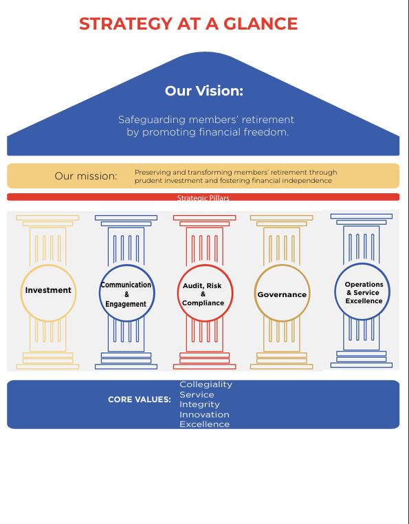

Our vision
Our strategic direction
Safeguarding members’ retirement by promoting financial freedom.
Strategy 2025–2030 turns our mission into action through five strategic pillars and five core values.
Strategy 2025–2030
Strategy at a Glance
Our strategic roadmap for delivering sustainable retirement security and institutional excellence from 2025–2030.

Our mission
Preserving and transforming members' retirement through prudent investment and fostering financial independence.
Strategic pillars
Five priorities for the next chapter.
The pillars translate the Strategy 2025–2030 into practical areas of focus that can be measured, communicated and strengthened over time.
01
Investment
Build resilient long-term value through prudent, informed investment decisions.
Learn more
Focus on disciplined oversight, appropriate diversification and clear performance reporting.
02
Communication & Engagement
Make Fund information clearer, more timely and more useful for every member.
Learn more
Improve education, member touchpoints and accessible communication channels.
03
Audit, Risk & Compliance
Embed assurance and accountability in every important Fund process.
Learn more
Strengthen risk awareness, compliance monitoring and independent assurance.
04
Governance
Maintain thoughtful oversight that protects the Fund's integrity and purpose.
Learn more
Support effective Board practice, timely information and clear decision rights.
05
Operations & Service Excellence
Deliver dependable processes and a more seamless member experience.
Learn more
Invest in operational capability, service quality and continuous improvement.
Core values
How we work together.
- Collegiality
- Service
- Integrity
- Innovation
- Excellence
2025Foundation
2026Embed
2027Accelerate
2028Strengthen
2029Measure
2030Renew
Strategy document
Download the Full Strategy
Access the complete Strategic Plan 2025–2030 to learn more about our vision, objectives, strategic priorities and implementation roadmap.